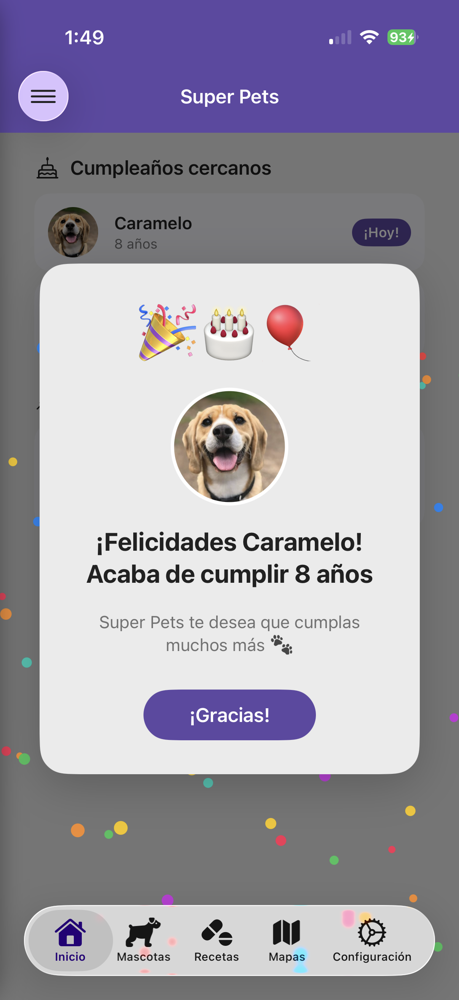
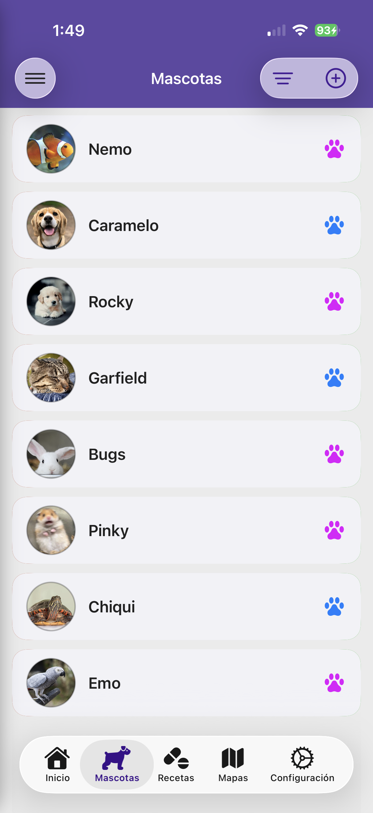
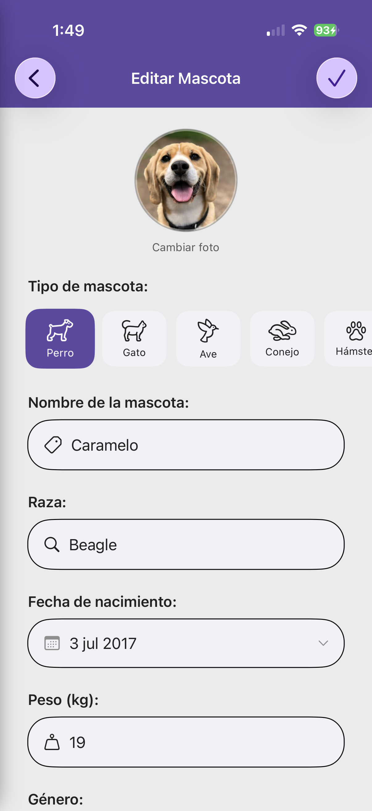
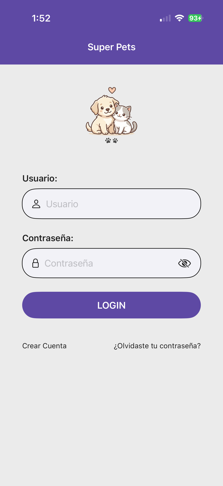
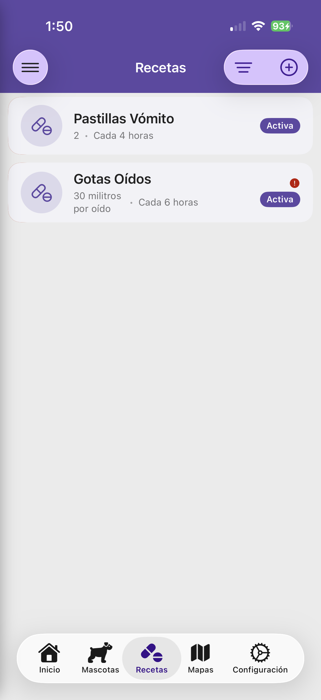
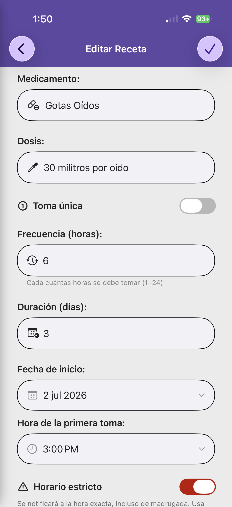
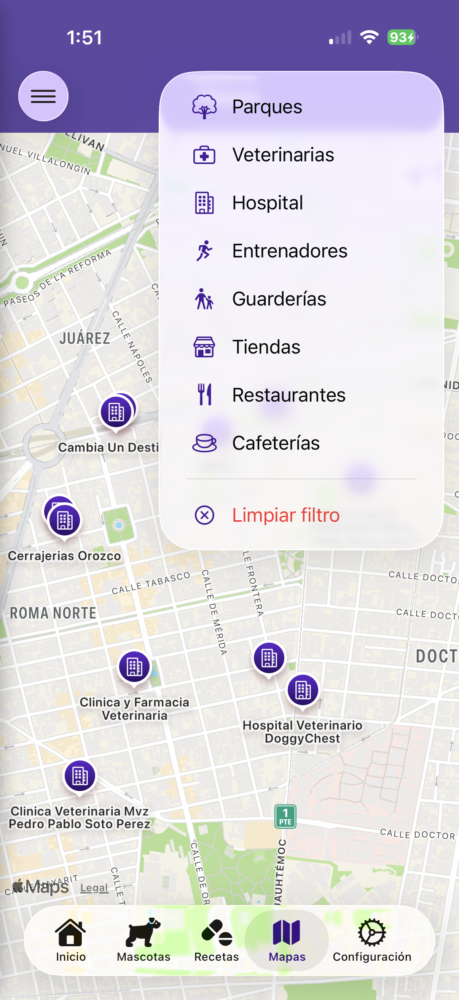
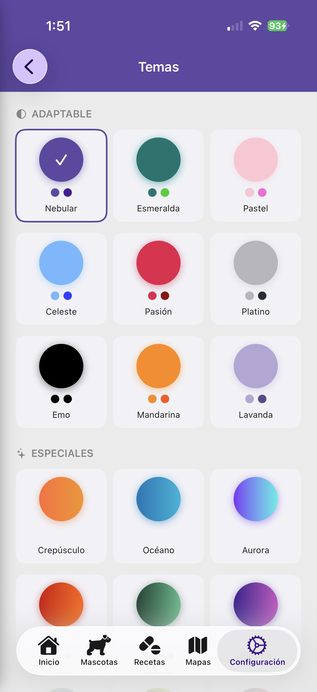
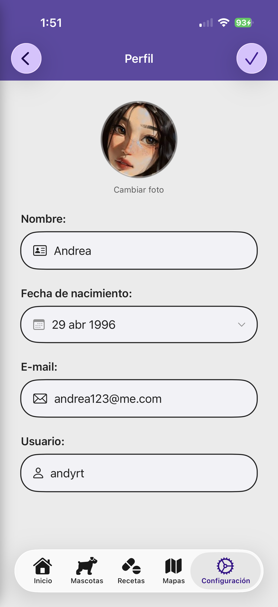
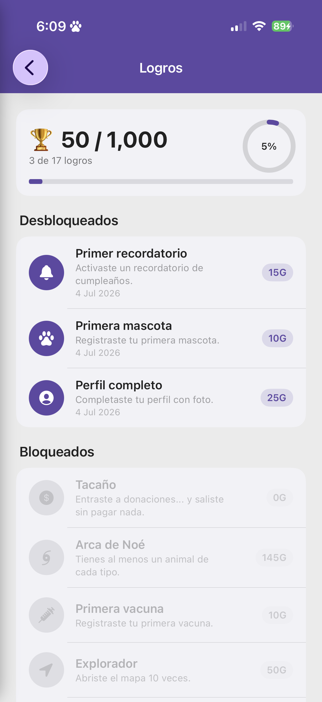

Vacunas, recetas, cumpleaños, veterinarias cercanas y mucho más. Super Pets te ayuda a ser el mejor dueño para tus compañeros peludos.
Descargar en App Store


Gestiona la salud y bienestar de todas tus mascotas desde una sola app.
Registra nombre, raza, peso, fecha de nacimiento, foto y documento RUAC de cada mascota. Soporta perros, gatos, aves, conejos y más.
Lleva el registro de vacunas y desparasitaciones con fotos, firma del veterinario y recordatorios automáticos para la próxima cita.
Controla medicamentos con dosis, frecuencia y duración. Recibe notificaciones puntuales para no olvidar ninguna toma.
Encuentra veterinarias, parques, tiendas de mascotas, guarderías y cafeterías pet-friendly cerca de ti.
Nunca olvides el cumpleaños de tu mascota. Celebra con animaciones especiales y recibe recordatorios anticipados.
Disponible en iPhone, iPad y Mac. Con widget en pantalla de inicio, companion para Apple Watch y widgets visibles desde CarPlay — tus mascotas siempre al alcance.
Genera un pasaporte digital con toda la información de tu mascota: datos, historial de vacunas, desparasitaciones y RUAC. Listo para compartir con tu veterinario.
Registra paseos con GPS en tiempo real o de forma manual. Ve la ruta en el mapa, duración y distancia recorrida. Comparte una imagen diseñada de tu paseo en redes sociales.
Tu paseo sigue activo aunque cierres la app. Visualiza el tiempo y la distancia en tiempo real desde la Dynamic Island o la pantalla de bloqueo.
Desbloquea logros mientras cuidas a tu mascota. Registra vacunas, celebra cumpleaños, explora el mapa, completa paseos y más. ¿Puedes llegar a los 1,000 puntos?
Una interfaz intuitiva con 35 temas personalizables y soporte para modo claro y oscuro.







Disponible para iPhone y iPad. Compatible con Apple Watch, Widget y sincronización automática con iCloud.
Descargar en App Store